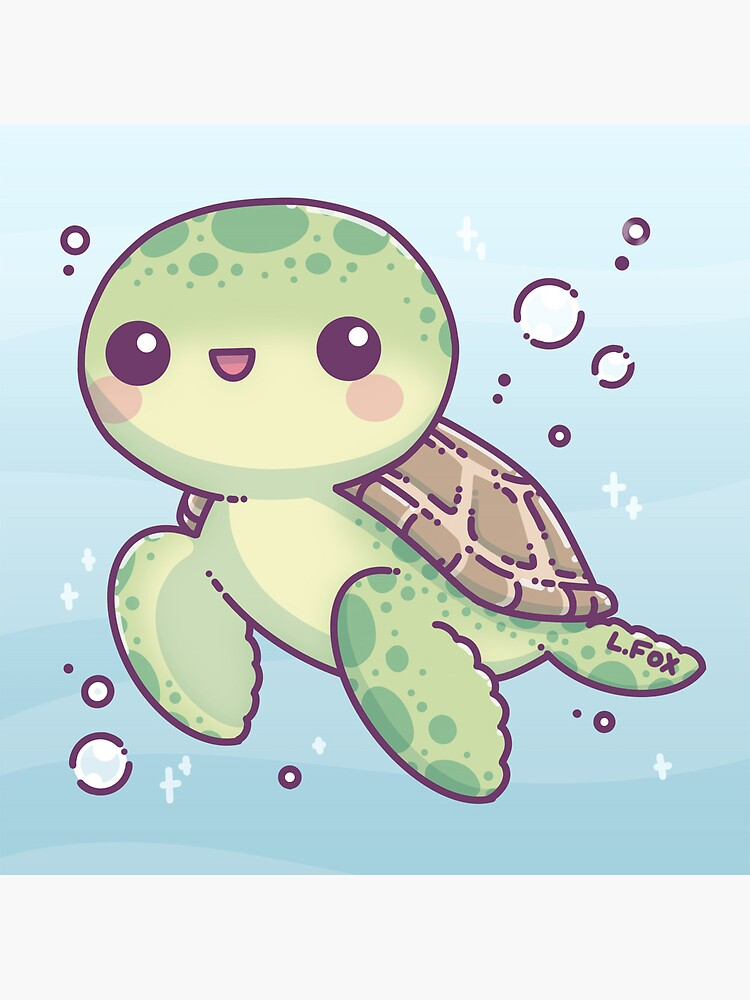

Ο Λάκης ο Χελωνάκης είναι μία μικρή,χαριτωμένη χελώνα που ζει σε ένα ήσυχο κήπο γεμάτο με λουλούδια.Απο μικρός αγαπούσε να εξερευνά κάθε γωνία του κήπου, ανακαλύπτοντας νέα φυτά και κάνοντας φίλους με τα άλλα ζώα.Είναι γνωστός για την υπομονή,τη σοφία και τη μεγάλη του καρδιά.
Παρόλο που κινείται αργά,ποτέ δεν βιάζεται απολαμβάνει την κάθε στιγμή της ζωής του.Κάθε απόγευμα κάθεται δίπλα στη λιμνούλα και παρακολουθεί τα ψάρια να κολυμπούν,ενώ το βράδυ χαλαρώνει κάτωα από τα αστέρια.
| Χαρακτηριστικά | Περιγραφή |
|---|---|
| Ηλικία | 12 ετών |
| Αγαπημένη Τροφή | Φρέσκα μαρούλια και φρούτα |
| Χόμπι | Περίπατοι στον κήπο και παρατήρηση της φύσης |